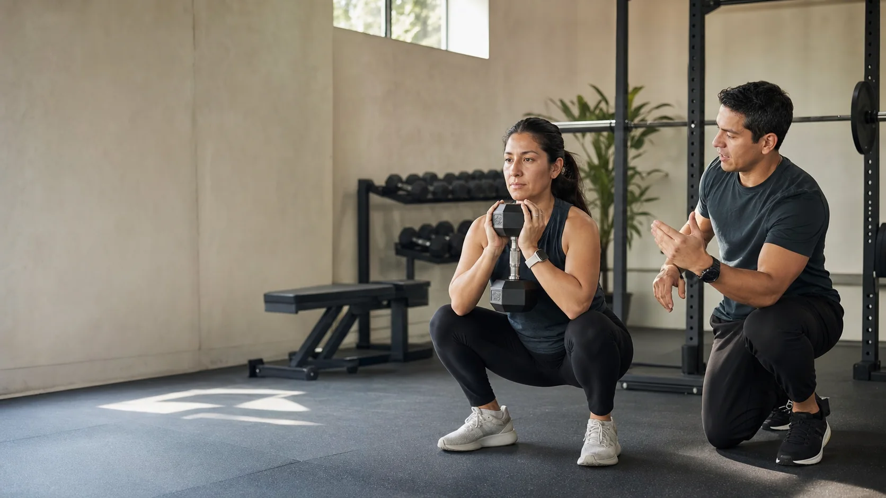
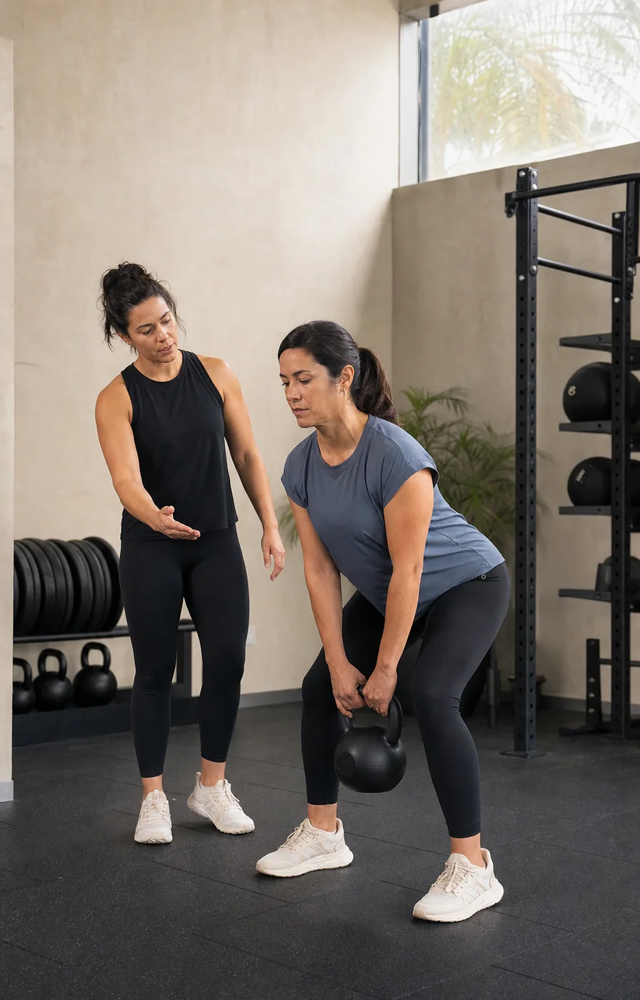
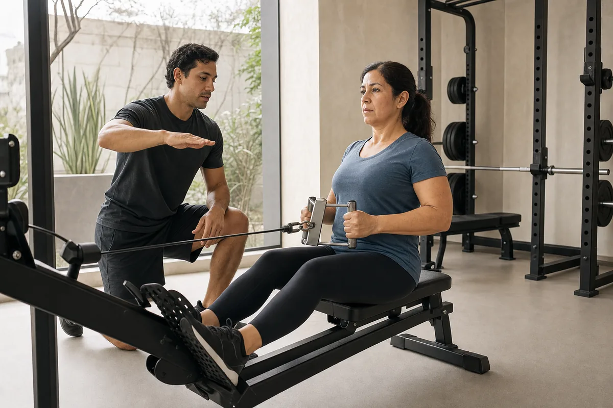
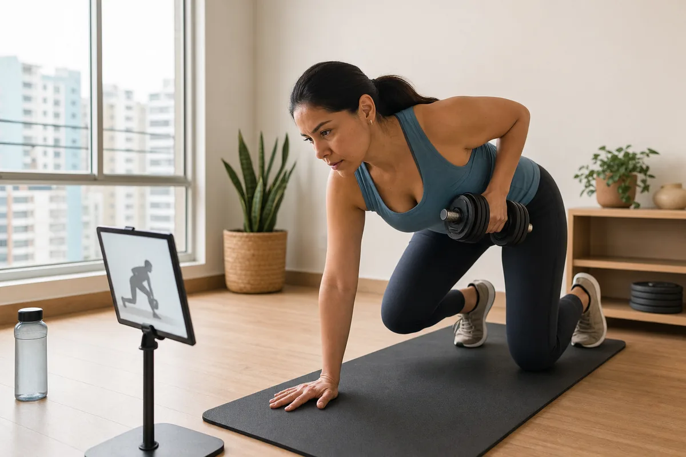
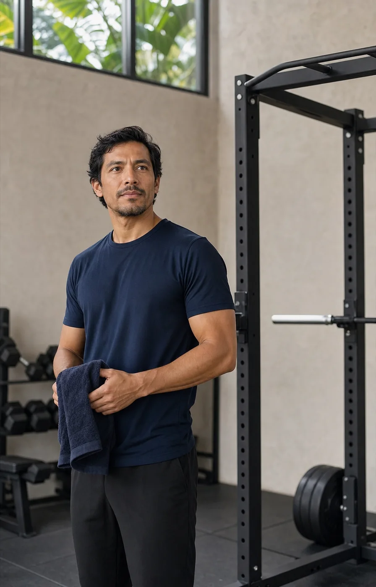

Vuelves después de una pausa
Retoma fuerza y capacidad sin intentar recuperar meses de inactividad en una sola semana.
Entrenamiento personal · Lima
Un plan que empieza donde estás: evaluación, técnica y seguimiento para avanzar con criterio, incluso cuando tu agenda no coopera.

Imagen conceptual generada para esta demostración
Punto de partida
El entrenamiento personal tiene sentido cuando reduce decisiones, adapta la carga a tu realidad y convierte cada sesión en información para la siguiente.
Retoma fuerza y capacidad sin intentar recuperar meses de inactividad en una sola semana.
Ordena ejercicios, cargas y frecuencia alrededor de una meta concreta y un calendario realista.
Combina sesiones presenciales y online para sostener el proceso cuando cambia tu rutina.

La técnica se observa y se adapta; no se da por hecha.
El método
Conversación inicial, experiencia previa, disponibilidad y movimientos básicos. Si existe una condición de salud, se solicita la orientación profesional correspondiente.
Se define una frecuencia sostenible, prioridades y progresiones. El programa se ajusta a tu contexto, no al revés.
Cada sesión busca calidad de movimiento, esfuerzo apropiado y una dosis que puedas recuperar.
Se observan asistencia, cargas, percepción de esfuerzo y ejecución. El plan cambia cuando la información lo pide.
Modalidades
La disponibilidad, frecuencia y precio se confirmarían con el profesional real. Esta demo no publica tarifas inventadas.

Imagen conceptualSesiones acompañadas para practicar movimientos, regular esfuerzo y progresar con supervisión directa.
Ideal si: estás empezando o quieres corregir tu ejecución.
Imagen conceptualProgramación clara, referencias de ejecución y revisiones periódicas para entrenar donde estés.
Ideal si: ya conoces los básicos y necesitas estructura.Combina sesiones técnicas presenciales con trabajo online para mantener continuidad durante la semana.
Ideal si: tu agenda cambia y no quieres perder el hilo.Bitácora de progreso
El seguimiento no es una colección de promesas. Es una forma de entender qué hiciste, cómo respondió tu cuerpo y qué conviene ajustar.
Imagen conceptual generada para esta demostración

El entrenador
“Mi trabajo no sería agotarte por una hora. Sería enseñarte a entrenar mejor y construir un proceso que puedas sostener.”
Este texto representa el posicionamiento propuesto para un profesional real. Nombre, trayectoria, certificaciones, colegiaturas y experiencia deberán reemplazarse únicamente con documentación proporcionada por el cliente.
Antes de empezar
No. La evaluación inicial sirve para adaptar el punto de partida. Quien ya entrena también puede usarla para ordenar su programación o revisar técnica.
Un entrenador no sustituye a un profesional sanitario. Antes de entrenar puede ser necesaria una autorización o indicación específica; el alcance dependerá de cada caso y de las credenciales verificadas del entrenador.
La demo no promete prescripción nutricional. Un plan alimentario individual debe quedar a cargo de un profesional habilitado para ello. El servicio real podrá coordinar recomendaciones generales o derivación, según corresponda.
La frecuencia se definiría según objetivo, experiencia, recuperación y disponibilidad. El punto de partida más útil es el que puedes sostener, no el más ambicioso sobre el papel.
Surco y San Borja son las zonas propuestas para esta demostración. El espacio exacto, horarios y condiciones deben confirmarse con los datos reales del negocio.
Siguiente paso
Una evaluación inicial debería aclarar tu objetivo, experiencia, disponibilidad y cualquier limitación relevante antes de proponer un programa.
Formulario de demostración: no envía ni almacena información. La entrega real requiere integrar un canal de contacto o sistema de reservas.